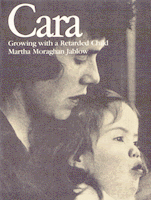

A mother's perspective of the joys and challenges of raising a child with Down's syndrome
A mother's perspective of the joys and challenges of raising a child with Down's syndrome


 A mother's perspective of the joys and challenges of raising a child with Down's syndrome
A mother's perspective of the joys and challenges of raising a child with Down's syndrome

|  |
CaraGrowing with a Retarded ChildMartha Moraghan Jablowpaper EAN: 978-0-87722-269-9 (ISBN: 0-87722-269-X) |
"The writing is sharp, clear, concise, informative, and poignant...for the nonprofessional as well as the professional reader. It establishes the importance and value of stimulation early in infancy for children like Cara who suffer from inadequate sensory input."
—Marshall D. Schechter, M.D., New England Journal of Medicine
Despite the fact that Cara Jablow was born with Down's syndrome, formerly known as "mongolism," she was reading before she was five. Her mother, a journalist, dramatically recounts Cara's development from birth to age seven, revealing how a family reacts to the news that their baby is retarded, how they now can make use of early intervention programs, and what Cara's prospects are for the future.
The book is a personal success story—the author admits to a "mother's pride"—because Cara benefited from programs that gave her extensive practice in motor and other skills. Not all the parents' dealings with doctors and educators have been good, however. The Jablows frequently encountered stereotypes of how little potential Down's syndrome children have, yet they also faced bureaucratic Catch-22s over Cara's developmental successes, as when Cara's speech tested too close to age level for her to receive state-funded speech therapy.
There is a great deal of family dynamics here: how parents support each other in times of severe stress; how they break the news of a retarded baby to friends and doting grandparents; how their normal children relate to the retarded one.
There are, of course, many special difficulties in raising a retarded child, but the book also points out that raising a normal child isn't all that different. The many family photos vividly evoke this. Like other families, the Jablows celebrate, suffer, and act silly. For professionals and parents, Cara's school life is illustrated with photos, test results, and educators' comments on her development.
Martha Moraghan Jablow is a freelance journalist. She and Paul Jablow have two children, Cara and David, ages eight and six.
© 2015 Temple University. All Rights Reserved. This page: http://www.temple.edu/tempress/titles/248_reg.html.